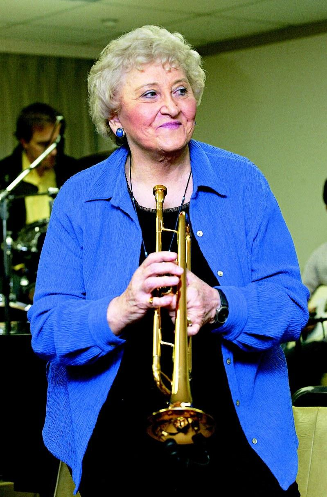
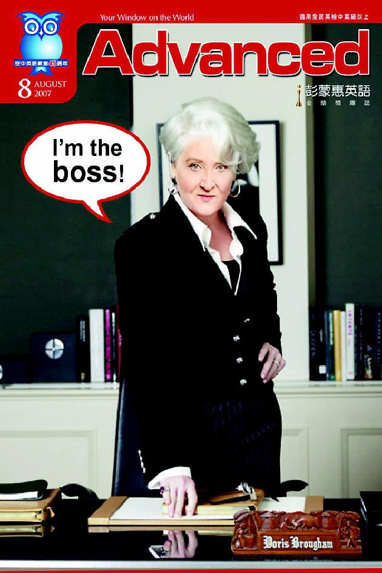

83岁的彭蒙惠从座位上站起来，抓起一只尺来高的猫咪布偶放在自己椅子上，眨眼说：「牠要赶快帮我占位子，别让（我办公室）外面那些家伙抢走了。」
办公室的门上，贴了张「山寨版」海报：「穿着Prada的恶魔」里凌厉的时尚教母脸孔由梅莉史翠普换成彭蒙惠，一样的银白短发、一样的尖下巴和长鼻子，几可乱真。那是「空中英语教室」同事电脑合成、送给彭蒙惠的生日礼物，是「空中英语教室」杂志从未曾出版的最炫封面，还加上口白：「I’m the boss（我才是老板）」。
搞笑彭老师 很不像老板
「彭老师是最不像老板的老板。」空英元老员工叶薇心说，虽然彭蒙惠是「空中英语教室」近300名中外员工的老板，事业版图横跨出版、广播、电视、网络，但每天最早来打卡的总是她；晚上回家还忙着打电话到国外、上网阅读，员工收到她半夜3时发出的电邮也不奇怪。
彭蒙惠用自己的英文名字（Doris）开玩笑：「（30年代美国）那个电影明星叫Doris Day（桃乐丝黛），我可是Doris Day & Night。」
几个世代的台湾人都是听彭蒙惠英文广播长大的，大家隔空爱戴的「彭老师」，超爱搞笑，精力充沛，还有强烈的感染力。她常说的话是：「Let's have fun.」「每件事都可以很好玩。」她把生活看成是一场精采的历险；「有趣会让你忘了害怕」，学英文是这样，到异乡宣教更是。

12岁的承诺 21岁上了船
那是12岁那年的夏令营，讲道的牧师问：「有谁愿意去中国宣教？」只有一只小手举得高高的，那是桃乐丝．布容，彭蒙惠的英文名字。
12岁孩子的承诺，当场没有大人当真；彭蒙惠却一生持守：「因为我举手，上帝看见了呀。」
近十年后，她果真从老家西雅图搭上开往中国的慢船，六周后抵达国共内战中的上海。
当21岁的彭蒙惠上了船，送行的父亲突然在岸上对女儿大喊：「孩子，你现在下船还来得及！」空中一架小飞机绕着港口盘旋，那是她三哥，他曾说，会向服役的单位借架小飞机为妹妹送行。
只身在异乡 躲起来大哭
彭蒙惠淡淡地说，从那天大船启航，她再没有见过父母。离开家两年后，在香港接到电报，父亲意外过世，美国政府也希望战火中的宣教士全部撤退，但母亲叮咛她：「你不要回来，按照计划去福尔摩沙，我会去看你。」
但这个承诺来不及实现，来到台湾的彭蒙惠，隔年接到母亲的噩耗。
那几乎是彭蒙惠一生最难受的时光。只身在异乡，失去双亲，什么是孤单，她懂了；什么是心碎，她也懂了。
在花莲日式旧房子里，她不想让人看见她的痛苦，拉开放棉被柜子的木门，将自己藏在柜子里放声痛哭。朋友说，我们常以为彭蒙惠什么都做得来，忘了她也只是个远离故乡的女孩。
台湾要什么 我就做什么
幸好，上帝送给台湾的彭蒙惠是这样的人，坚信「人不能只想到自己，更要想别人的需要」。彭蒙惠不断强调这句话，这似是她一生行事的圭臬。再困难的境地，她也能自得其乐，当年到中国的第一个生日，她决心要给自己一点鼓励，在兰州的狂风沙中骑着铁马寻找她思念的家乡滋味：冰淇淋。竟然真被她找着了。
对往事的诸多艰难，她都已淡忘，只记得初来台湾时的燠热，日式房子充当广播节目录音室，「太热了，要关门录音，我只好穿泳衣录。」一录好，她马上和原住民孩子从岩石跳入溪流里，凉快。
当年努力发展出口的台湾，需要英文教育，彭蒙惠说，台湾需要什么，她就做什么。1962年，「空中英语教室」正式发声；大作家林语堂对她的发音大表赞赏，邀她合作录制了中学英语教科书，更奠定她在台湾英语教育的地位。
直到如今，她仍是「空英」的灵魂人物，她的桌上、柜上堆满各式新知，全是彭蒙惠读过、圈选过的，会放在销售近60万份的「空中英语教室」杂志上。文章实用、逗趣，又有传教士不容马虎的「洁癖」，绝不教「让人不好意思」的俚语，彭蒙惠主张：要学就要学「好英文」。
为英文教育 视钱身外物
同仁想的广告口号「Study with the best（与最好者共读），被她推翻，「我不知道我们是不是『最好的』，」于是改成「 Friend for a life（一辈子的朋友）」。广告部门为了增加业绩而找来吸引青少女的内衣广告，也被彭蒙惠往外推。
宣教60年，彭蒙惠没有房子，车子、衣服都是人家送的，但她有一只狗和一把小喇吧，「我不需要钱，上帝会供应一切。」
今年，彭蒙惠回美国领取她的第四座荣誉博士，行前仍旧忙碌。
膝盖退化的彭蒙惠缓缓走进了录音室，用英文问美籍伙伴：「你们知道中文『福』字是什么意思吗？左边『示』是神，右边是『一口田』，就是人在伊甸园里跟上帝在一起，这就是幸福。」美国同乡大表佩服，彭蒙惠也得意地为自己鼓掌：「好，今天中文课结束，再来就是『空中英语教室』。」
显示「录音中」的红灯亮起，满头金发已成银丝的彭蒙惠还在这里，数十年如一日地跟台湾孩子打招呼：「Hello, everyone.」
(本文原刊登于2009年6月28日联合报A8版)
➤➤➤空中英语教室创办人彭蒙惠过世 享耆寿98岁
➤➤➤空中英语教室证实彭蒙惠辞世 遗嘱交代：把所有一切全捐出